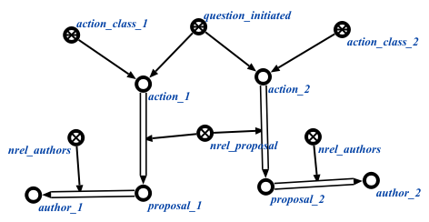

Команда поиска всех инициированных знаков действий предназначена для поиска всех инициированных знаков действий. У данной команды нет аргументов. Результатом выполнения команды является вывод на экран всех инициированных знаков действий, предложений в рамках этих действий, если такие есть, а также авторов данных предложений.
